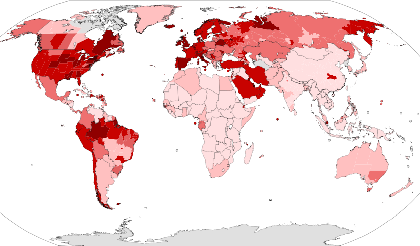

introduction
The COVID-19 pandemic, also known as the coronavirus pandemic, is an ongoing pandemic of coronavirus disease 2019 (COVID‑19), caused by severe acute respiratory syndrome coronavirus 2 (SARS‑CoV‑2). The outbreak was first identified in Wuhan, China, in December 2019. The World Health Organization declared the outbreak a Public Health Emergency of International Concern on 30 January, and a pandemic on 11 March. As of 17 May 2020, more than 4.71 million cases of COVID-19 have been reported in more than 188 countries and territories, resulting in more than 315,000 deaths. More than 1.73 million people have recovered from the virus.
The virus is primarily spread between people during close contact, most often via small droplets produced by coughing, sneezing, and talking. The droplets usually fall to the ground or onto surfaces rather than travelling through air over long distances. Less commonly, people may become infected by touching a contaminated surface and then touching their face. It is most contagious during the first three days after the onset of symptoms, although spread is possible before symptoms appear, and from people who do not show symptoms.
Common symptoms include fever, cough, fatigue, shortness of breath, and loss of smell. Complications may include pneumonia and acute respiratory distress syndrome. The time from exposure to onset of symptoms is typically around five days but may range from two to fourteen days. There is no known vaccine or specific antiviral treatment. Primary treatment is symptomatic and supportive therapy.
Recommended preventive measures include hand washing, covering one's mouth when coughing, maintaining distance from other people, wearing a face mask in public settings, and monitoring and self-isolation for people who suspect they are infected. Authorities worldwide have responded by implementing travel restrictions, lockdowns, workplace hazard controls, and facility closures. Many places have also worked to increase testing capacity and trace contacts of infected persons.
The pandemic has caused severe global economic disruption, including the largest global recession since the Great Depression. It has led to the postponement or cancellation of sporting, religious, political, and cultural events, widespread supply shortages exacerbated by panic buying, and decreased emissions of pollutants and greenhouse gases. Schools, universities, and colleges have closed either on a nationwide or local basis in 186 countries, affecting approximately 98.5 percent of the world's student population. Misinformation about the virus has spread online, and there have been incidents of xenophobia and discrimination against Chinese people and against those perceived as being Chinese or as being from areas with high infection rates.